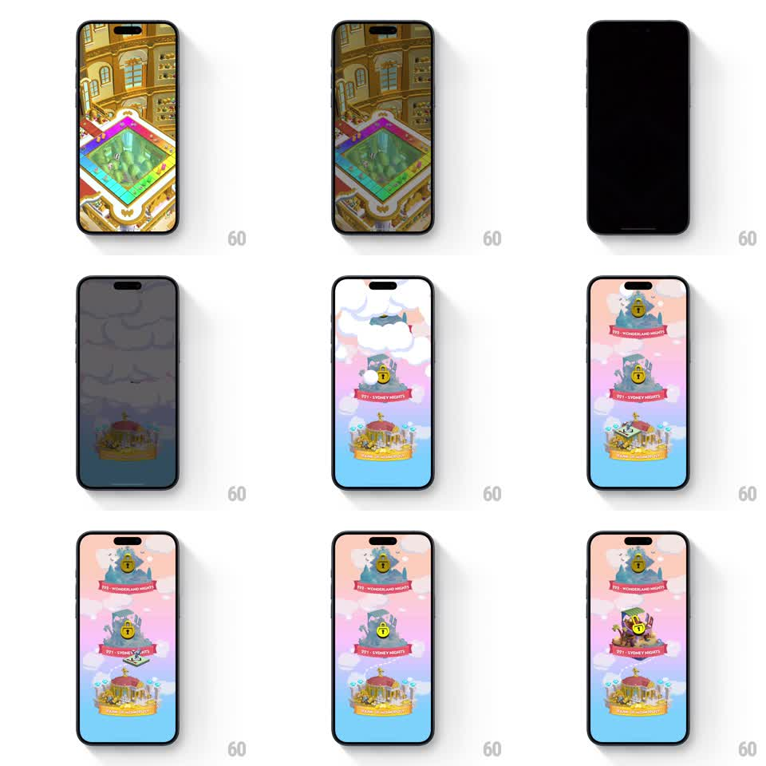

Media
Frame-by-frame

Rebuild this animation 1:1: Monopoly Go's level-map transition - the board fades to black, clouds part over a pastel sky, and the level islands assemble with the new one bouncing into its unlocked state.

Rebuild this animation 1:1: Monopoly Go's level-map transition - the board fades to black, clouds part over a pastel sky, and the level islands assemble with the new one bouncing into its unlocked state.
## Integration
Integration: stack-agnostic spec - springs given as stiffness/damping, timed motions as duration + curve; map every value to your framework and animation library of choice.
## Scene
A 3D board scene fades out to black, then a sky-blue and pink cloudscape fades in with drifting clouds. On it, a vertical path of floating island levels: locked grey islands with padlock badges ("WONDERLAND NIGHTS", "SYDNEY NIGHTS") and the completed colorful island ("PARISIAN PLAZA") below.
## Motion spec
Pattern: cloud-part reveal with level assembly, ~2.5s.
- The board scene dims and fades to black (400ms).
- The pastel sky fades in (400ms) with clouds drifting slowly across (continuous 8s loop).
- Islands assemble top-down: each island drops in with a soft bounce (spring stiffness 300 damping 15, 200ms stagger), its name ribbon unfurling beneath it (200ms).
- Cloud wisps pass in front of the islands as they settle, partially veiling them.
- The newest island (bottom) finishes in its unlocked colorful state with a final celebratory bounce and a sparkle pop (scale 1 to 1.1 and back, 300ms).
## Calibration
- The sky gradient runs blue at the bottom to pink at the top - flat sky loses the dreamy read.
- Locked islands are greyscale with gold padlocks; only the completed one is in color.
## Reduced motion
Sky and islands fade in assembled.
## Don't miss
- Clouds drift in front of and behind islands at different depths - keep the layering.
- The ribbons unfurl from the island, they do not fade in flat.